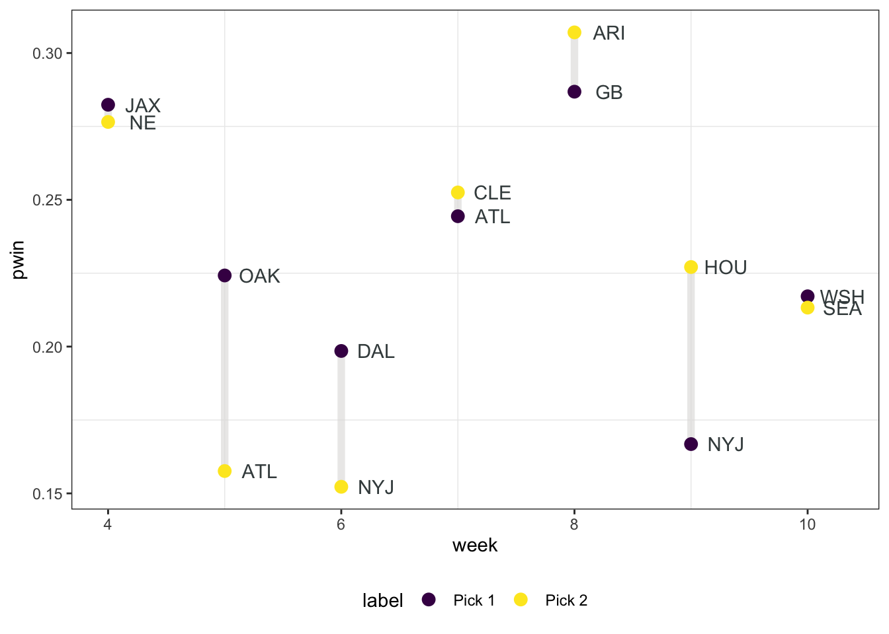

NFL Losers Pool - 2022
Coming out of of Labour Day weekend only means one thing, it is time again for the annual NFL Losers Pool competition. This is the second time I am writing about this type of competition. You can see my blog post about trying to draft an optimal lineup here: 2021 NFL Losers Pool.
Below are the rules for our 2022 contest.
Losers Pool Rules
- You must pick exactly one team per week to lose their game.
- You cannot pick the same team more than once per season.
- If your team wins their game, you are eliminated.
- Rebuys back into the competition are allowed for Weeks 1 and 2.
- You may enter up to three sets of picks.
Pick Optimization
The objective of this competition is to outlast the other competitors in the pool. Specifically, this means avoiding elimination and being the remaining player in the pool. The second point is worth noting because we will shift our strategy from simply minimizing the risk of our picks losing, to maximizing the likelihood that our picks move on relative to the picks of others in the pool. A quick foreshadowing - this will involve using team ownership to trade-off probability of making it to the next week for increasing our expected value in the competition.
There are a total of 32 teams to choose from, and we can expect the pool to run for roughly 10 weeks - going off of last years competition. This is a large number of potential combinations of teams to select in each week. In fact for 10 weeks, it is \(32 \times 31 \times ... \times 22\) which is roughly 234 trillion combinations (I’m not including teams with bye weeks but you get the idea, the space of possible picks is very large).
Fortunately, we can be smart about our optimization, and conditional on game forecasts, reach the global optimum without much computation work. I use two different algorithms to compare pick schedules; what I call the Opportunity Cost Model and Naive Model. The Naive Model will out preform the Opportunity Cost model in the short run, but eventually the Opportunity Cost model will pass the Naive Model in future weeks.
Opportunity Cost Model - picking the lowest win probability team in a given week conditional on it having the largest distance to the second lowest win probability that same week.
Naive Model - Picking the team with the lowest win probability in the first week, then the second, and so on…
Opportunity Cost Algorithm
- Step 1: Compute the difference between the least and second least likely teams to win in each week for each team and week in the pool.
- Step 2: Pick the team & week combination with the largest difference between the least and second least likely teams.
- Step 3: Remove the week and team combination from the pool and repeat Steps 1 & 2 until all weeks are filled.
Naive Model Algorithm
- Step 1: Start at the earliest week we wish to optimize over.
- Step 2: Pick the team with the lowest probability of winning, and remove this team from the candidate pool.
- Step 3: Move on to the next week, and repeat Steps 2 and 3 until we reach the terminal week.
Making Picks
Lets put the above algorithms to action. Like last year, I am using the FiveThirtyEight NFL Projections to estimate each teams likelihood of winning their game. These ratings are based off of each teams computed ELO score, with some additional adjustments - read about their methodology here.
We can see that there are some clear weeks below with drastic underdogs, and each week after Week 1 contains at least one game with a win probability less than 25%.

I choose to run the above two algorithms starting in Week 3. Since we can rebuy back into the competition in Weeks 1 and 2, we do not want to take a valuable pick from our elimination weeks. Therefore, I make my set of picks on weeks 3 through 10, then pick Week 1 and 2 after removing the Weeks 3 - 10 picks.
The two algorithms are compared against each other in the below figure. Notice that there is only one difference between the Opportunity Cost Model (OC), and Naive Model (Naive). The OC model takes on 5% more risk in Week 3, in order to save 7.5% in Week 10.

Admittedly, since the risk we are saving is only realized late in the competition - Week 10, it may be best to follow the Naive model.
We can compare the likelihoods of reaching a given week for both models. Notice it is only until Week 10 that the OC model outpreforms the Naive model.

Now that we have Weeks 3 - 10 determined, I need to determine the best pick to make in Weeks 1 and 2. In order to give myself some padding as the game probabilities are updated weekly, I will extend my projections out to week 14. My intention is that this will capture any potential picks that may work their way into the optimal lineup when the game forecasts are recalculated.
| Week | Team | Win Probability |
|---|---|---|
| 1 | PIT | 0.32 |
| 1 | ARI | 0.43 |
| 1 | MIN | 0.47 |
| 1 | BUF | 0.47 |
| 2 | LAC | 0.35 |
| 2 | MIA | 0.39 |
| 2 | MIN | 0.42 |
| 2 | CIN | 0.42 |
Our best two picks after removing all possible picks from Weeks 3 - 14 in both models are the Pittsburgh Steelers and LA Chargers. As a quick sanity check, let’s plot where their win probabilities with our pick projections to see if these teams are likely to show up in any given weeks.

LAC is a safe pick to make, they’re favourited in most of the games in the first 10 weeks, and in fact lie well above both models in week 10. Similarly, Pittsburgh could be an option in week 5, but both models select Atlanta which we can take across both teams given their low win probability. Therefore, we feel like Week 1 Pittsburg and Week 2 LA Chargers will not interfere with our possible lineups in Weeks 3 - 10.